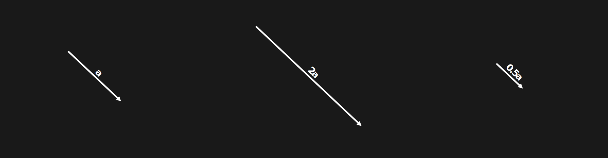

What is a vector?
A vector is an arrow
A vector is an arrow
- Length (Magnitude)
- Direction

- Magnitude: A
- Direction: θ
Adding vectors geometrically
Multiplying vectors by a number
Unit Vectors
$\hat{i}$ - a vector of length 1 in the positive x direction
$\hat{j}$ - a vector of length 1 in the positive y direction
$\hat{k}$ - a vector of length 1 in the positive z direction
Vector in Rectangular Coordinates
$3\hat{i}$
$4\hat{j}$
$\boldsymbol{a} = 3\boldsymbol{\hat{i}} + 4\boldsymbol{\hat{j}}$
$|\boldsymbol{a}| = \sqrt{3^2+4^2} = 5$
$-3\boldsymbol{a} = (-3)(3\boldsymbol{\hat{i}}) + (-3)(4\boldsymbol{j}) = -9\boldsymbol{\hat{i}} -12\boldsymbol{\hat{j}}$
Converting to Polar Coordinates
Magnitude
$|\boldsymbol{a}| = \sqrt{3^2+4^2} = 5$
Angle
$\theta = \tan^{-1}(4/3) = \cot^{-1}(3/4)$
Converting to Rectangular Coordinates
Let $\boldsymbol{b}$ be a vector with length $l =10$ and angle $\theta = 42°$
x component
$l\cos(\theta)\boldsymbol{\hat{i}} = 10\cos(42)\boldsymbol{\hat{i}} \approx 7.43\boldsymbol{\hat{i}} $
y component
$l\sin(\theta)\boldsymbol{\hat{j}} = 10\sin(42)\boldsymbol{\hat{j}} \approx 6.69\boldsymbol{\hat{j}} $
$ \boldsymbol{a} \approx 7.43\boldsymbol{\hat{i}} + 6.69\boldsymbol{\hat{j}}$
- Dot(Scalar) product $ \boldsymbol{a} \cdot \boldsymbol{b} $
- Cross(Vector) product $ \boldsymbol{a} \times \boldsymbol{b} $
Dot Product - Geometry
What is the dot product?
Red $\cdot$ Blue
Blue $\cdot$ Red
$|R||B|\cos(\theta)$
$|B||R|\cos(\theta)$
This implies $v \cdot v = |v|^{2} $ . Also, if $ a \perp b $ then $ a \cdot b = 0$
Dot Product - Rectangular Coordinates
- Let $a = 2\boldsymbol{\hat{i}} + 4\boldsymbol{\hat{j}}$
- Let $b = -3\boldsymbol{\hat{i}} + 3\boldsymbol{\hat{j}}$
- Then $ a \cdot b = (2\times-3) + (4\times 3) = -6 + 12 = 6$